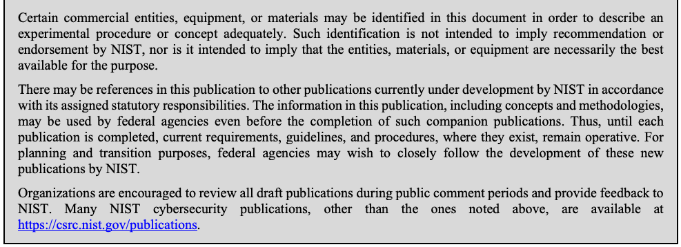

NIST Special Publication · PDF 原文抽出
CMVP Approved Non-Invasive Attack Mitigation Test Metrics: CMVP Validation Authority Updates to ISO/IEC 24759
CMVP承認の非侵襲攻撃緩和テスト指標
NIST SP 800-140F（CMVP Approved Non-Invasive Attack Mitigation Test Metrics: CMVP Validation Authority Updates to ISO/IEC 24759）の英文と日本語訳を段落ごとに並べた閲覧用ページです。ISO/IEC 19790附属書FおよびISO/IEC 24759 6.18項に対するCMVPの非侵襲攻撃緩和テスト指標の変更を示します。 翻訳は非公式です。要件の確認にはNIST の正式版 PDFを参照してください。
PDF から抽出した原文は原本との照合待ちです。
NIST Special Publication 800-140F
NIST特別刊行物800-140F
未レビュー訳CMVP Approved Non-Invasive Attack Mitigation Test Metrics:
CMVP承認済み非侵襲的攻撃緩和テスト指標：
未レビュー訳CMVP Validation Authority Updates to ISO/IEC 24759
ISO/IEC 24759に対するCMVP検証機関の更新
未レビュー訳Kim Schaffer
Kim Schaffer
未レビュー訳This publication is available free of charge from: https://doi.org/10.6028/NIST.SP.800-140F
本刊行物は次のURLから無料で入手できます：https://doi.org/10.6028/NIST.SP.800-140F
未レビュー訳I N F O R M A T I O N S E C U R I T Y
情報セキュリティ
未レビュー訳NIST Special Publication 800-140F
NIST特別刊行物800-140F
未レビュー訳CMVP Approved Non-Invasive Attack Mitigation Test Metrics:
CMVP承認済み非侵襲的攻撃緩和テスト指標：
未レビュー訳CMVP Validation Authority Updates to ISO/IEC 24759
ISO/IEC 24759に対するCMVP検証機関の更新
未レビュー訳Kim Schaffer
Kim Schaffer
未レビュー訳Computer Security Division Information Technology Laboratory
情報技術研究所 コンピュータセキュリティ部門
未レビュー訳This publication is available free of charge from: https://doi.org/10.6028/NIST.SP.800-140F
本刊行物は次のURLから無料で入手できます：https://doi.org/10.6028/NIST.SP.800-140F
未レビュー訳March 2020
2020年3月
未レビュー訳米国商務省の紋章
U.S. Department of Commerce Wilbur L. Ross, Jr., Secretary
米国商務省 Wilbur L. Ross, Jr. 長官
未レビュー訳National Institute of Standards and Technology
米国国立標準技術研究所
未レビュー訳Walter Copan, NIST Director and Under Secretary for Standards and Technology
Walter Copan、NIST所長兼標準技術担当次官
未レビュー訳Authority
権限
未レビュー訳This publication has been developed by NIST in accordance with its statutory responsibilities under the Federal Information Security Modernization Act (FISMA) of 2014, 44 U.S.C. § 3551 et seq., Public Law (P.L.) 113-283. NIST is responsible for developing information security standards and guidelines, including minimum requirements for federal information systems, but such standards and guidelines shall not apply to national security systems without the express approval of appropriate federal officials exercising policy authority over such systems. This guideline is consistent with the requirements of the Office of Management and Budget (OMB) Circular A-130.
本刊行物は、2014年連邦情報セキュリティ近代化法（FISMA）、合衆国法典第44編§3551以降、公法（P.L.）113-283に基づく法定責任に従い、NISTが策定した。NISTは、連邦情報システムの最低要件を含む情報セキュリティ標準およびガイドラインの策定を担う。ただし、適切な連邦当局者が当該システムに関する政策権限に基づき明示的に承認しない限り、これらの標準およびガイドラインは国家安全保障システムに適用されない。本ガイドラインは、行政管理予算局（OMB）通達A-130の要件に整合している。
未レビュー訳Nothing in this publication should be taken to contradict the standards and guidelines made mandatory and binding on federal agencies by the Secretary of Commerce under statutory authority. Nor should these guidelines be interpreted as altering or superseding the existing authorities of the Secretary of Commerce, Director of the OMB, or any other federal official. This publication may be used by nongovernmental organizations on a voluntary basis and is not subject to copyright in the United States. Attribution would, however, be appreciated by NIST.
本刊行物のいかなる記述も、法定権限に基づき商務長官が連邦機関に義務付け、拘束力を持たせた標準およびガイドラインに反すると解釈すべきではない。また、本ガイドラインは、商務長官、OMB長官、またはその他の連邦当局者の既存の権限を変更または置き換えるものと解釈してはならない。本刊行物は非政府組織が任意で利用でき、米国では著作権の対象ではない。ただし、NISTへの帰属表示を歓迎する。
未レビュー訳National Institute of Standards and Technology Special Publication 800-140F Natl. Inst. Stand. Technol. Spec. Publ. 800-140F, 8 pages (March 2020) CODEN: NSPUE2
国立標準技術研究所 特別刊行物800-140F、Natl. Inst. Stand. Technol. Spec. Publ. 800-140F、8ページ（2020年3月）CODEN: NSPUE2
未レビュー訳This publication is available free of charge from: https://doi.org/10.6028/NIST.SP.800-140F
本刊行物は次のURLから無料で入手できます：https://doi.org/10.6028/NIST.SP.800-140F
未レビュー訳Certain commercial entities, equipment, or materials may be identified in this document in order to describe an experimental procedure or concept adequately. Such identification is not intended to imply recommendation or endorsement by NIST, nor is it intended to imply that the entities, materials, or equipment are necessarily the best available for the purpose. There may be references in this publication to other publications currently under development by NIST in accordance with its assigned statutory responsibilities. The information in this publication, including concepts and methodologies, may be used by federal agencies even before the completion of such companion publications. Thus, until each publication is completed, current requirements, guidelines, and procedures, where they exist, remain operative. For planning and transition purposes, federal agencies may wish to closely follow the development of these new publications by NIST. Organizations are encouraged to review all draft publications during public comment periods and provide feedback to NIST. Many NIST cybersecurity publications, other than the ones noted above, are available at https://csrc.nist.gov/publications.
原本の表画像

実験手順または概念を適切に説明するため、本書では特定の商業主体、機器、または資料を識別する場合がある。この識別は、NISTによる推奨または保証を意味するものではなく、当該主体、資料、または機器が目的に対して必ずしも最良であることを示すものでもない。本刊行物には、割り当てられた法定責任に従ってNISTが現在策定中の他の刊行物への参照が含まれる場合がある。これらの刊行物が完成する前であっても、本刊行物に記載された情報（概念および方法論を含む）は連邦機関が利用できる。したがって、各刊行物が完成するまでは、既存の要件、ガイドライン、および手順は引き続き有効である。連邦機関は、計画および移行のため、NISTによる新しい刊行物の策定状況を注意深く確認するとよい。組織には、公開コメント期間中にすべての草案を確認し、NISTに意見を提出することが推奨される。上記以外の多くのNISTサイバーセキュリティ刊行物は https://csrc.nist.gov/publications で入手できる。
未レビュー訳Comments on this publication may be submitted to: National Institute of Standards and Technology Attn: Computer Security Division, Information Technology Laboratory 100 Bureau Drive (Mail Stop 8930) Gaithersburg, MD 20899-8930 Email: sp800-140-comments@nist.gov
本刊行物へのコメントは、次の宛先に提出できます：National Institute of Standards and Technology, Attn: Computer Security Division, Information Technology Laboratory, 100 Bureau Drive (Mail Stop 8930), Gaithersburg, MD 20899-8930, Email: sp800-140-comments@nist.gov
未レビュー訳All comments are subject to release under the Freedom of Information Act (FOIA).
すべてのコメントは、情報公開法（FOIA）に基づく公開の対象です。
未レビュー訳Reports on Computer Systems Technology
コンピュータシステム技術に関する報告書
未レビュー訳The Information Technology Laboratory (ITL) at the National Institute of Standards and Technology (NIST) promotes the U.S. economy and public welfare by providing technical leadership for the Nation’s measurement and standards infrastructure. ITL develops tests, test methods, reference data, proof of concept implementations, and technical analyses to advance the development and productive use of information technology. ITL’s responsibilities include the development of management, administrative, technical, and physical standards and guidelines for the cost-effective security and privacy of other than national security-related information in federal information systems. The Special Publication 800-series reports on ITL’s research, guidelines, and outreach efforts in information system security, and its collaborative activities with industry, government, and academic organizations.
国立標準技術研究所（NIST）の情報技術研究所（ITL）は、米国の計量・標準インフラに技術的リーダーシップを提供し、米国経済と公共福祉の向上に貢献している。ITLは、情報技術の開発と効果的な利用を促進するため、試験、試験方法、参照データ、概念実証実装、および技術分析を開発する。ITLの責務には、連邦情報システムにおける国家安全保障関連以外の情報の費用対効果に優れたセキュリティとプライバシーのための、管理上、運用上、技術上、および物理的な標準とガイドラインの策定が含まれる。特別刊行物800シリーズは、情報システムセキュリティに関するITLの研究、ガイドライン、普及活動、ならびに産業界、政府、学術機関との協力活動を報告する。
未レビュー訳Abstract
概要
未レビュー訳NIST Special Publication (SP) 800-140F replaces the approved non-invasive attack mitigation test metric requirements of ISO/IEC 19790 Annex F. As a validation authority, the Cryptographic Module Validation Program (CMVP) may supersede this Annex in its entirety. This document supersedes ISO/IEC 19790 Annex F and ISO/IEC 24759 paragraph 6.18.
NIST特別刊行物（SP）800-140Fは、ISO/IEC 19790附属書Fの承認済み非侵襲的攻撃緩和テスト指標の要件に置き換わる。検証機関として、暗号モジュール検証プログラム（CMVP）は、この附属書全体を置き換えることができる。本書は、ISO/IEC 19790附属書FおよびISO/IEC 24759の6.18項に置き換わる。
未レビュー訳Keywords
キーワード
未レビュー訳attack mitigation; Cryptographic Module Validation Program; CMVP; FIPS 140 testing; FIPS 140; ISO/IEC 19790; ISO/IEC 24759; non-invasive; testing requirement; vendor evidence; vendor documentation.
攻撃緩和；暗号モジュール検証プログラム；CMVP；FIPS 140試験；FIPS 140；ISO/IEC 19790；ISO/IEC 24759；非侵襲的；試験要件；ベンダー証拠；ベンダー文書。
未レビュー訳Audience
対象読者
未レビュー訳This document is focused toward the vendors, testing labs, and CMVP for the purpose of addressing issues in cryptographic module testing.
本書は、暗号モジュール試験に関する課題に対処することを目的として、ベンダー、試験機関、およびCMVPを対象とする。
未レビュー訳Table of Contents
目次
未レビュー訳1 Scope — 1
1 適用範囲 — 1
未レビュー訳2 Normative references — 1
2 規範参照 — 1
未レビュー訳3 Terms and definitions — 1
3 用語および定義 — 1
未レビュー訳4 Symbols and abbreviated terms — 1
4 記号および略語 — 1
未レビュー訳5 Document organization — 2
5 文書の構成 — 2
未レビュー訳5.1 General — 2
5.1 一般 — 2
未レビュー訳5.2 Modifications — 2
5.2 変更 — 2
未レビュー訳6 CMVP-approved non-invasive attack mitigation test metric requirements — 2
6 CMVP承認済み非侵襲的攻撃緩和テスト指標の要件 — 2
未レビュー訳6.1 Purpose — 2
6.1 目的 — 2
未レビュー訳6.2 Approved non-invasive attack mitigation test metrics — 2
6.2 承認済み非侵襲的攻撃緩和テスト指標 — 2
未レビュー訳1 Scope
1 適用範囲
未レビュー訳This document specifies the Cryptographic Module Validation Program (CMVP) modifications of the methods to be used by a Cryptographic and Security Testing Laboratory (CSTL) to demonstrate conformance. This document also specifies the modification of methods for evidence that a vendor or testing laboratory provides to demonstrate conformity. Unless otherwise specified in this document, the test requirements are specified in ISO/IEC 24759 paragraph 6.18.
本書は、暗号モジュール検証プログラム（CMVP）が定める、暗号・セキュリティ試験機関（CSTL）が適合性を実証するために用いる方法の変更を規定する。また、ベンダーまたは試験機関が適合性を実証するために提出する証拠に関する方法の変更も規定する。本書で別途指定されない限り、試験要件はISO/IEC 24759の6.18項に規定される。
未レビュー訳2 Normative references
2 規範参照
未レビュー訳This section identifies the normative references cited as ISO/IEC 19790 and ISO/IEC 24759. The specific editions to be used are ISO/IEC 19790:2012 and ISO/IEC 24759:2017. Please note that the version 19790:2012 referenced here includes the corrections made in 2015.
本節では、ISO/IEC 19790およびISO/IEC 24759として引用する規範参照を示す。使用する版はISO/IEC 19790:2012およびISO/IEC 24759:2017である。ここで参照する19790:2012には、2015年に行われた正誤修正が含まれることに注意すること。
未レビュー訳National Institute of Standards and Technology (2019) Security Requirements for Cryptographic Modules. (U.S. Department of Commerce, Washington, DC), Federal Information Processing Standards Publication (FIPS) 140-3. https://doi.org/10.6028/NIST.FIPS.140-3
National Institute of Standards and Technology（2019）「暗号モジュールのセキュリティ要件」（米国商務省、ワシントンD.C.）、連邦情報処理標準（FIPS）刊行物140-3。https://doi.org/10.6028/NIST.FIPS.140-3
未レビュー訳3 Terms and definitions
3 用語および定義
未レビュー訳The following terms and definitions supersede or are in addition to ISO/IEC 19790 and ISO/IEC 24759.
以下の用語および定義は、ISO/IEC 19790およびISO/IEC 24759に優先するか、これらに追加される。
未レビュー訳No additional terms at this time.
現時点で追加用語はない。
未レビュー訳4 Symbols and abbreviated terms
4 記号および略語
未レビュー訳The following symbols and abbreviated terms supersede or are in addition to ISO/IEC 19790 and ISO/IEC 24759 throughout this document:
以下の記号および略語は、本書全体においてISO/IEC 19790およびISO/IEC 24759に優先するか、これらに追加される。
未レビュー訳CCCS
CCCS
未レビュー訳Canadian Centre for Cyber Security
カナダ・サイバーセキュリティセンター
未レビュー訳CMVP
CMVP
未レビュー訳Cryptographic Module Validation Program
暗号モジュール検証プログラム
未レビュー訳CSD
CSD
未レビュー訳Computer Security Division
コンピュータセキュリティ部門
未レビュー訳CSTL
CSTL
未レビュー訳Cryptographic and Security Testing Laboratory
暗号・セキュリティ試験機関
未レビュー訳FIPS
FIPS
未レビュー訳Federal Information Processing Standard
連邦情報処理標準
未レビュー訳FISMA
FISMA
未レビュー訳Federal Information Security Management/Modernization Act
連邦情報セキュリティ管理法／近代化法
未レビュー訳NIST
NIST
未レビュー訳National Institute of Standards and Technology
国立標準技術研究所
未レビュー訳SP 800-XXX NIST Special Publication 800 series document
SP 800-XXX NIST特別刊行物800シリーズ文書
未レビュー訳5 Document organization
5 文書の構成
未レビュー訳5.1 General
5.1 一般
未レビュー訳Section 6 of this document replaces the approved non-invasive attack mitigation test metrics requirements of ISO/IEC 19790 Annex F and ISO/IEC 24759 paragraph 6.18.
本書の第6節は、ISO/IEC 19790附属書FおよびISO/IEC 24759の6.18項にある承認済み非侵襲的攻撃緩和テスト指標の要件に置き換わる。
未レビュー訳5.2 Modifications
5.2 変更
未レビュー訳Modifications will follow a similar format as in ISO/IEC 24759. For additions to test requirements, new Test Evidence (TEs) or Vendor Evidence (VEs) will be listed by increasing the “sequence_number.” Modifications can include a combination of additions using underline and deletions using strikethrough. If no changes are required, the paragraph will indicate “No change.”
変更は、ISO/IEC 24759と同様の形式に従う。試験要件を追加する場合、新しい試験証拠（TE）またはベンダー証拠（VE）を「sequence_number」の昇順で列挙する。変更には、下線による追加と取消線による削除の組み合わせを含めることができる。変更が不要な場合、その段落には「変更なし」と記載する。
未レビュー訳6 CMVP-approved non-invasive attack mitigation test metric requirements
6 CMVP承認済み非侵襲的攻撃緩和テスト指標の要件
未レビュー訳6.1 Purpose
6.1 目的
未レビュー訳This document identifies CMVP-approved non-invasive attack mitigation test metrics.
本書は、CMVPが承認する非侵襲的攻撃緩和テスト指標を示す。
未レビュー訳6.2 Approved non-invasive attack mitigation test metrics
6.2 承認済み非侵襲的攻撃緩和テスト指標
未レビュー訳No additional requirements at this time
現時点で追加要件はない。
未レビュー訳Document Revisions
文書の改訂履歴
未レビュー訳| 日付 | 変更内容 |